CS Basics with Python
Computer vision intro
Alex Avdiushenko
November 29, 2023
What is computer vision?

What is vision?
- Eyes are the human organ that provides 80 percent of information about the surrounding world to a person. (Though, it depends on how you calculate it)
- Vision is the extraction of information from the visual signal hitting the retina
Computer vision
- The same concept, only instead of the brain it's a computer, and instead of an eye it's a camera

General Challenge in Computer Vision
To learn how to respond to the same questions that a person can answer by looking at a photo or video. This is a kind of Turing test for a computer vision system.
Our Dreams
- For the computer to "understand" the semantics of the scene in the image
- To automatically recognize what and where is depicted
- To categorize and identify objects, determine their properties and relationships
Existing Obstacles: Object
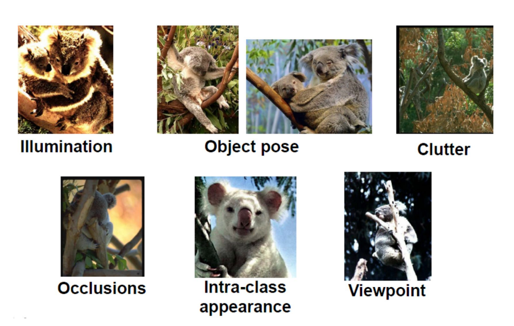How We See an Object
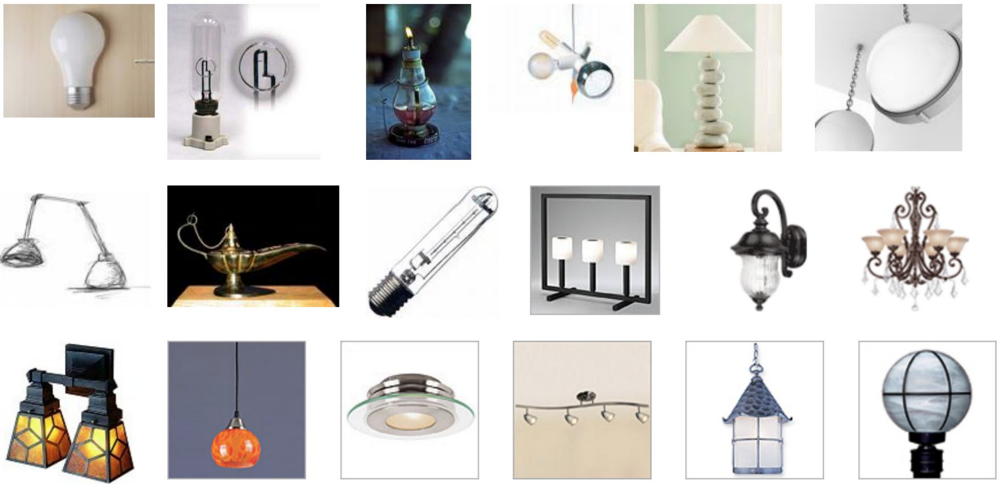Semantic gap: from low-level features to the objects
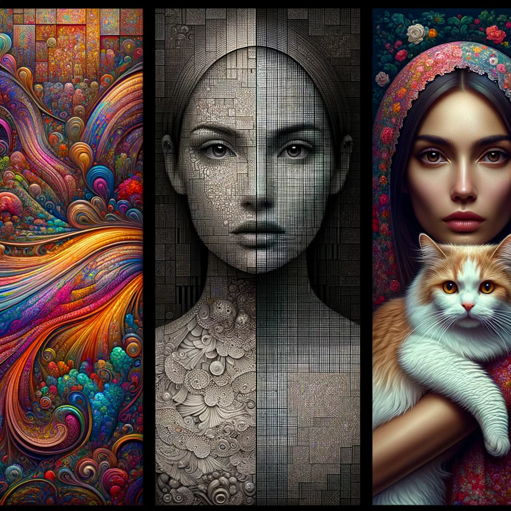A few facts about our visual perception:
- Our brain often "completes" the picture and adds semantics (We can all recognize "something" or "someone" in the outline of a cloud)
- The visual system is self-learning
- It's difficult for Europeans to distinguish Asian faces, and vice versa
- We look for familiar patterns in images
- Always we are trying to predict (with strong internal prior) the whole picture

Brightness Adaptation and Contrast Sensitivity
The visual system can adapt to a brightness range of around $10^{10}$. The subjective brightness is a logarithmic function of the physical brightness.
Photopic and Scotopic vision
- Photopic Vision: This type of vision dominates in well-lit conditions, such as in daylight or under bright artificial lighting. It involves the use of cones, the photoreceptor cells responsible for color perception. It permits color and high acuity vision to see fine details.
- Scotopic vision takes over in low light or night-time conditions. It involves the use of rods, that are much more sensitive to light than cones but do not provide color information and doesn't allow for the resolution of fine details.
Whirlwind, MIT 1951
- The first computer to display text and graphics in real time on a monitor
- Displayed the map with dots, the airplane with an icon
- Used a "light pen" for interaction with the screen (requesting information about an object)
The Birth of Computer Vision (1960)
Determining the mutual arrangement of simple geometric figures
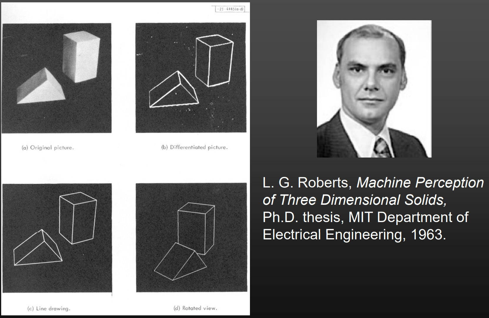Viola-Jones face detector, 2001
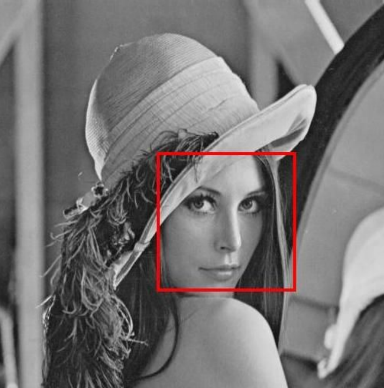Deep learning, 2010+
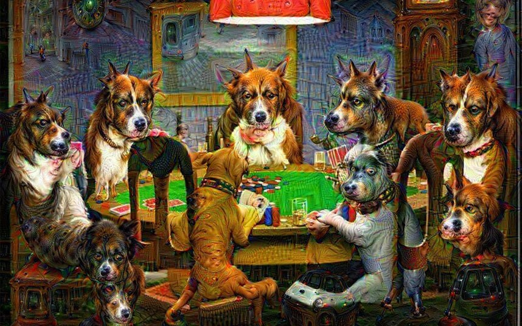What is color?
Color is a psychological property of our vision that arises when observing objects and light,
not the physical properties of objects and light
(S. Palmer, Vision Science: Photons to Phenomenology).
But what about this spectrum and all that?
Visible Light
- Electromagnetic radiation in the range [380nm,780nm]
- Visible light falls within the main "optical window" of the Earth's atmosphere (~46% energy)
Light physics
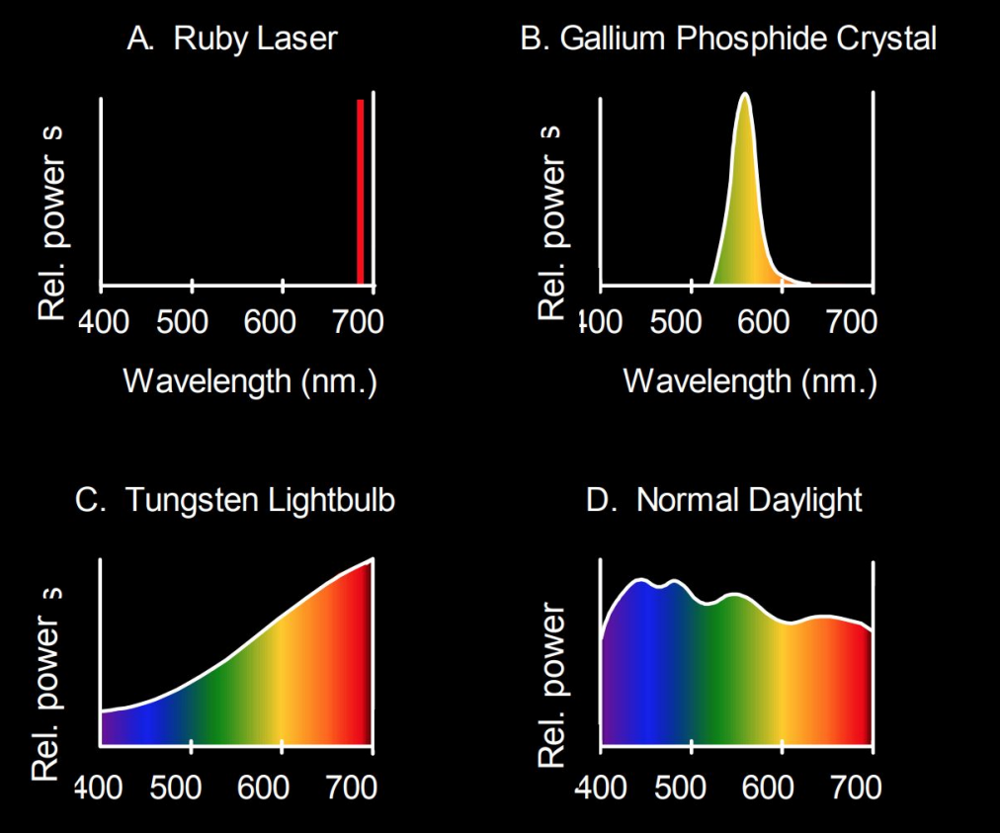Reflected light
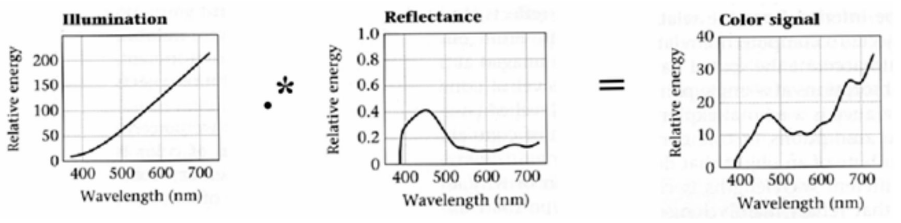Examples of Reflection Spectra
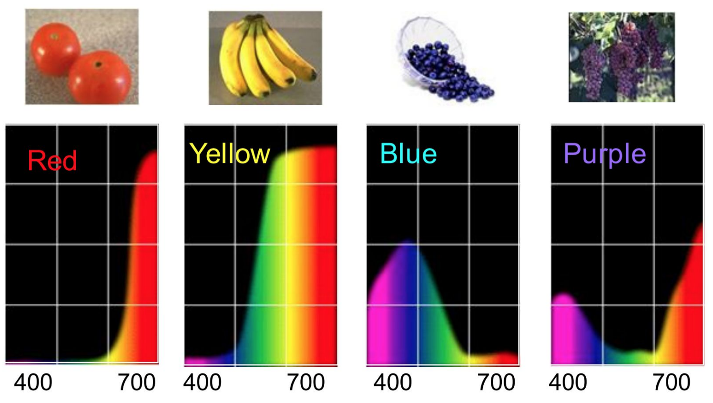Rods and Cones
- Rods and cones are spectrum filters. The spectrum is multiplied by the response curve, integration is performed across all wavelengths — each of three types of cone gives 1 number: S, M, L.
- How can we describe the entire spectrum with just 3 numbers?
- The fact is we cannot! A significant amount of information is lost. Two different spectra can be indistinguishable.
Metamers — different spectra of the same color
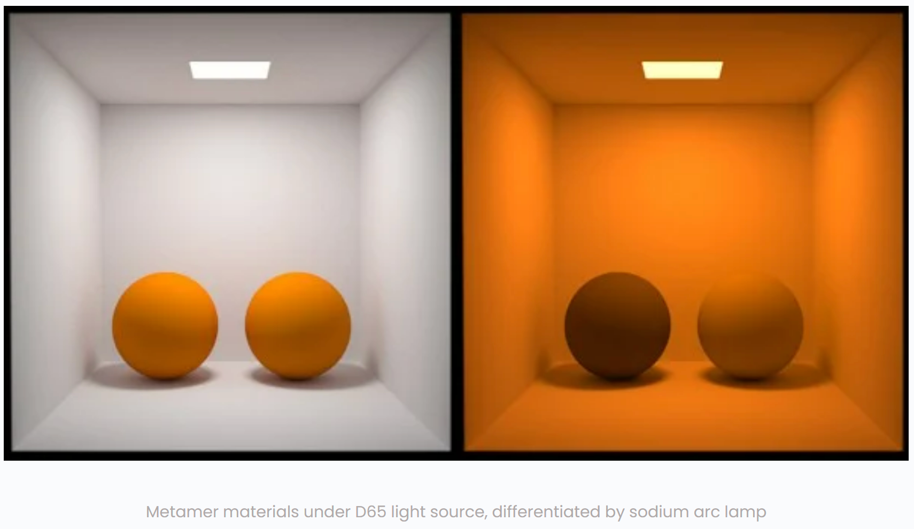RGB model
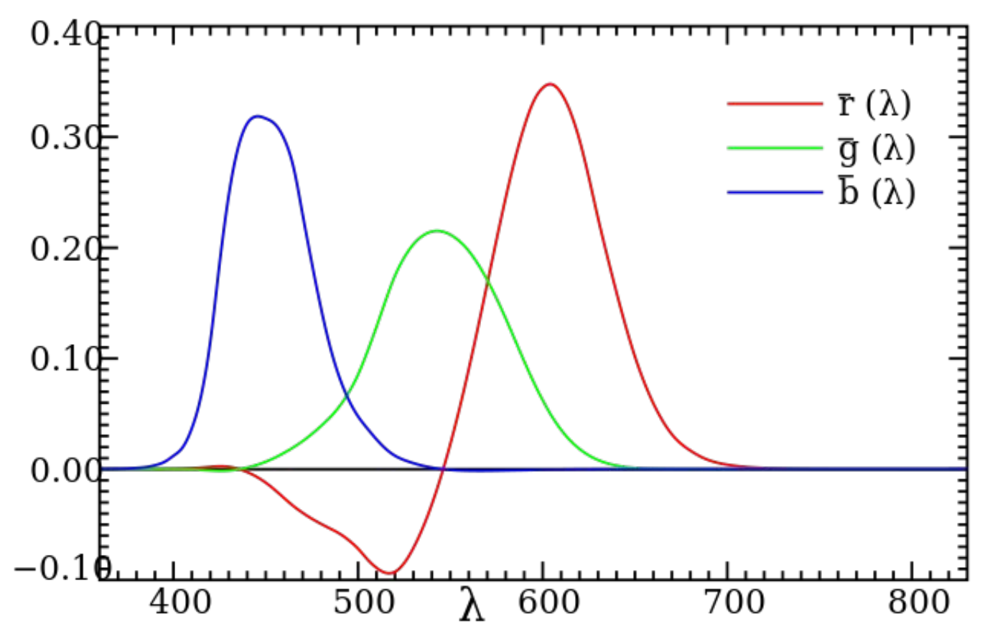CIE XYZ
- One of the first mathematically defined color spaces that could represent all colors visible to the average human
- Is based on the idea that every color perceived by the human eye can be represented as a combination of three primary colors (X, Y, Z)
- Color Gamut and Color Spaces: All colors that can be represented by a specific set of primaries forms a color gamut. The CIE XYZ color space serves as a reference space to compare other color spaces or gamuts.
Digital Image Formats
Current typical display adapters use up to 24-bits of information for each pixel: 8-bit per component multiplied by three components (RGB) with values of 0–255.
With this system, $16\ 777\ 216 ( = 256^3 = 2^{24}$) discrete combinations of R, G, and B values are allowed, providing millions of different (though not necessarily distinguishable) hue, saturation and lightness shades.
GIF
Graphics Interchange Format — bitmap image format. GIF images are compressed using the Lempel–Ziv–Welch (LZW) lossless data compression technique to reduce the file size without degrading the visual quality.
PNG
Portable Network Graphics — was developed as an improved, non-patented replacement for GIF. Unofficially, the initials PNG stood for the recursive acronym "PNG's not GIF", also lossless.
JPEG
- Joint Photographic Experts Group — is a commonly used method of lossy compression for digital images, particularly produced by digital photography.
- The degree of compression can be adjusted, allowing a selectable tradeoff between storage size and image quality.
- JPEG typically achieves 10:1 compression with little perceptible loss in image quality. It uses discrete cosine transform and quantization.
WebP
- WebP is a raster graphics file format developed by Google intended as a replacement for JPEG, PNG, and GIF file formats =)
- It supports both lossy and lossless compression, as well as animation and alpha transparency.
- Google announced the WebP format in September 2010, and released the first stable version of its supporting library in April 2018.